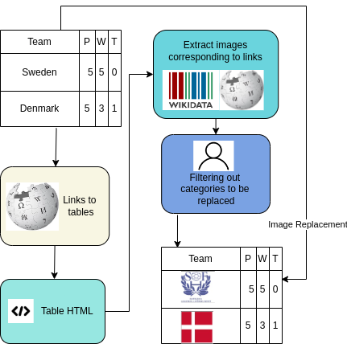

Knowledge-Aware Reasoning over Multimodal Semi-structured Tables
About
Existing datasets for tabular question answering typically focus exclusively on text within cells. However, real-world data is inherently multimodal, often blending images such as symbols, faces, icons, patterns, and charts with textual content in tables. With the evolution of AI models capable of multimodal reasoning, it is pertinent to assess their efficacy in handling such structured data.
This study investigates whether current AI models can perform knowledge-aware reasoning on multimodal structured data. We explore their ability to reason on tables that integrate both images and text, introducing {\sc {\sc MMTabQA}}, a new dataset designed for this purpose. Our experiments highlight substantial challenges for current AI models in effectively integrating and interpreting multiple text and image inputs, understanding visual context, and comparing visual content across images. These findings establish our dataset as a robust benchmark for advancing AI's comprehension and capabilities in analyzing multimodal structured data.
Dataset Details
we create the MMTabQA dataset with 69,740 questions over 25,026 tables by augmenting existing tables from four data sources:
- WikiSQL Dataset to benchmark model capabilities in parsing entities accurately and answering basic SQL-based questions.
- WikiTableQuestions dataset to include questions which require more complex reasoning.
- FeTaQA dataset to include long-form answer-based questions which involve multiple row/column reasoning.
- HybridQA dataset which includes extra contextual passages beyond the tables, requiring hybrid complex reasoning.
The dataset contains questions of the following types:
- Explicit Questions: which mention an entity that is replaced by an image in the table.
- Answer-Mention Questions: whose answer contains an entity that is replaced by an image in the table, but the question does not.
- Implicit Questions: where an image-replaced entity is involved in intermediate reasoning but not mentioned in the answer or the question.
- Visual Questions: Questions that involve visual aspects of entities. These are created by synthetically augmenting the explicit questions in the dataset with visual attributes of the entity they refer to.
| No. of Questions | Avg. Img per Table | No. of Tables | Overall |
|---|---|---|---|
| WikiSQL | 21,472 | 13.68 | 9,784 |
| WikiTable-Questions | 10,052 | 17.67 | 1,259 |
| FeTaQA | 7,476 | 10.43 | 5,898 |
| HybridQA | 30,470 | 14.64 | 8,085 |
| Overall | 69,740 | 14.10 | 25,026 |
| Data Source | Question Type Statistics | |||
|---|---|---|---|---|
| Explicit Ques | Implicit Ques | Visual Ques | Answer-Mention Ques | |
| FeTaQA | 2,499 | 612 | 1,185 | 3,180 |
| WikiTable-Questions | 3,523 | 2,879 | 877 | 2,773 |
| WikiSQL | 12,956 | 315 | 1,827 | 6,374 |
| HybridQA | 5,819 | 17,647 | 1,874 | 5,130 |
Dataset Creation
The figure below shows the steps followed for creating the dataset:

Dataset Examples
Experimental Results
| Dataset | WikiTableQuestions | WikiSQL | FetaQA | |||||||||
|---|---|---|---|---|---|---|---|---|---|---|---|---|
| Model | EQ | AQ | IQ | VQ | EQ | AQ | IQ | VQ | EQ | AQ | IQ | VQ |
| Partial Input Baseline | ||||||||||||
| Gemini-1.5 Flash | 40.99 | 27.38 | 48.95 | 31.4 | 39.14 | 28.71 | 62.22 | 28 | 0.51 | 0.44 | 0.44 | 0.47 |
| GPT-4o | 57.45 | 38.02 | 70.83 | 42.40 | 52.57 | 43.86 | 72.38 | 39.00 | 0.51 | 0.46 | 0.42 | 0.44 |
| Llama-3 70B | 41.13 | 26.48 | 43.75 | 31.8 | 41.117 | 30.75 | 61.27 | 30.6 | 0.52 | 0.46 | 0.45 | 0.48 |
| Mixtral 8x7B | 26.56 | 9.90 | 30.26 | 20.2 | 23.42 | 17.71 | 28.88 | 19.2 | 0.44 | 0.39 | 0.38 | 0.39 |
| Oracle-Entity Replaced Baseline | ||||||||||||
| Gemini-1.5 Flash | 74.89 | 78.19 | 54.86 | - | 82.28 | 81.86 | 77.46 | - | 0.56 | 0.50 | 0.41 | - |
| GPT-4o | 87.80 | 84.86 | 84.55 | - | 85.57 | 82.71 | 79.05 | 39.00 | 0.53 | 0.48 | 0.43 | - |
| Llama-3 70B | 75.74 | 75.31 | 58.85 | - | 78.28 | 78.57 | 68.25 | - | 0.49 | 0.46 | 0.41 | - |
| Mixtral 8x7B | 54.89 | 53.87 | 40.69 | - | 59.28 | 69.28 | 33.96 | - | 0.44 | 0.41 | 0.33 | - |
| Image-Captioning Baseline | ||||||||||||
| Gemini-1.5 Flash | 52.34 | 42.16 | 51.39 | 42.2 | 50.42 | 40.85 | 67.30 | 46.6 | 0.57 | 0.46 | 0.42 | 0.43 |
| Table-as-an-Image Baseline | ||||||||||||
| Gemini-1.5 Flash | 44.22 | 25.65 | 41.01 | 37.8 | 47.08 | 35.75 | 52.38 | 35.25 | 0.62 | 0.43 | 0.42 | 0.47 |
| GPT-4o | 66.12 | 50.60 | 62.12 | 46.0 | 72.28 | 64.82 | 58.49 | 32.6 | 0.62 | 0.46 | 0.43 | 0.50 |
| Llama-3 70B | 57.76 | 41.90 | 45.54 | 42.1 | 55.24 | 48.54 | 59.84 | 45.8 | 0.56 | 0.45 | 0.41 | 0.44 |
| Mixtral 8x7B | 40.34 | 20.38 | 41.16 | 30.9 | 38.74 | 29.29 | 39.12 | 30.9 | 0.55 | 0.43 | 0.41 | 0.42 |
People
The InfoSync dataset is prepared by collaboration of across multiple institutions University of Utah, IIT Guwahati, CTAE and Bloomberg LP by the following people:

Citation
Please cite our paper as below if you use the InfoSync dataset.
@misc{mathur2024knowledgeawarereasoningmultimodalsemistructured,
title={Knowledge-Aware Reasoning over Multimodal Semi-structured Tables},
author={Suyash Vardhan Mathur and Jainit Sushil Bafna and Kunal Kartik and Harshita Khandelwal and Manish Shrivastava and Vivek Gupta and Mohit Bansal and Dan Roth},
year={2024},
eprint={2408.13860},
archivePrefix={arXiv},
primaryClass={cs.CL},
url={https://arxiv.org/abs/2408.13860},
}
Acknowledgement
Research was sponsored by the Army Research Office and was accomplished under Grant Number W911NF-20-1-0080. The views and conclusions contained in this document are those of the authors and should not be interpreted as representing the official policies, either expressed or implied, of the Army Research Office or the U.S. Government. The U.S. Government is authorized to reproduce and distribute reprints for Government purposes notwithstanding any copyright notation herein. This work was partially funded by ONR Contract N00014-19-1-2620. Lastly, we extend our appreciation to the reviewing team for their insightful comments.